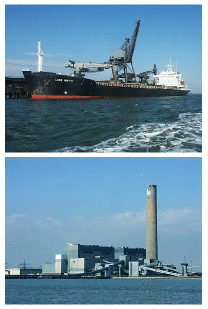
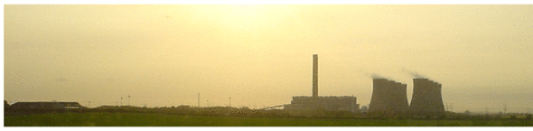

23 Sustainable fossil fuels?

Figure 23.1. Coal being delivered to Kingsnorth power station (capacity 1940 MW) in 2005. Photos by Ian Boyle www.simplonpc.co.uk.
Figure 23.2. “Sustainable fossil fuels.”
It is an inescapable reality that fossil fuels will continue to be an important part of the energy mix for decades to come.
UK government spokesperson, April 2008
Our present happy progressive condition is a thing of limited duration.
William Stanley Jevons, 1865
We explored in the last three chapters the main technologies and lifestyle changes for reducing power consumption. We found that we could halve the power consumption of transport (and de-fossilize it) by switching to electric vehicles. We found that we could shrink the power consumption of heating even more (and de-fossilize it) by insulating all buildings better and using electric heat pumps instead of fossil fuels. So yes, we can reduce consumption. But still, matching even this reduced consumption with power from Britain’s own renewables looks very challenging (figure 18.7). It’s time to discuss non-renewable options for power production.
Take the known reserves of fossil fuels, which are overwhelmingly coal: 1600 Gt of coal. Share them equally between six billion people, and burn them “sustainably.” What do we mean if we talk about using up a finite resource “sustainably”? Here’s the arbitrary definition I’ll use: the burn-rate is “sustainable” if the resources would last 1000 years. 1 A ton of coal delivers 8000 kWh of chemical energy, 2 so 1600 Gt of coal shared between 6 billion people over 1000 years works out to a power of 6 kWh per day per person. A standard coal power station would turn this chemical power into electricity with an efficiency of about 37% – that means about 2.2 kWh(e) per day per person. If we care about the climate, however, then presumably we would not use a standard power station. Rather, we would go for “clean coal,” also known as “coal with carbon capture and storage” 3 – an as-yet scarcely-implemented technology that sucks most of the carbon dioxide out of the chimney-flue gases and then shoves it down a hole in the ground. Cleaning up power station emissions in this way has a significant energy cost – it would reduce the delivered electricity by about 25%. So a “sustainable” use of known coal reserves would deliver only about 1.6 kWh(e) per day per person.
We can compare this “sustainable” coal-burning rate – 1.6 Gt per year – with the current global rate of coal consumption: 6.3 Gt per year, and rising.
What about the UK alone? Britain is estimated to have 7 Gt of coal left. 4 OK, if we share 7 Gt between 60 million people, we get 100 tons per person. If we want a 1000-year solution, this corresponds to 2.5 kWh per day per person. In a power station performing carbon capture and storage, this sustainable approach to UK coal would yield 0.7 kWh(e) per day per person.
(Figure omitted from this edition: third-party rights.)
Figure 23.3. A caterpillar grazing on old leaves. Photo by Peter Gunn.
Our conclusion is clear:
Clean coal is only a stop-gap.
If we do develop “clean coal” technology in order to reduce greenhouse gas emissions, we must be careful, while patting ourselves on the back, to do the accounting honestly. The coal-burning process releases greenhouse gases not only at the power station but also at the coal mine. 5 Coal-mining tends to release methane, carbon monoxide, and carbon dioxide, both directly from the coal seams as they are exposed, and subsequently from discarded shales and mudstones; for an ordinary coal power station, these coal-mine emissions bump up the greenhouse gas footprint by about 2%, so for a “clean” coal power station, these emissions may have some impact on the accounts. There’s a similar accounting problem with natural gas: if, say, 5% of the natural gas leaks out along the journey from hole in the ground to power station, then this accidental methane pollution is equivalent (in greenhouse effect) to a 40% boost in the carbon dioxide released at the power station. 6
New coal technologies
Stanford-based company www.directcarbon.com are developing the Direct Carbon Fuel Cell, which converts fuel and air directly to electricity and CO2, without involving any water or steam turbines. They claim that this way of generating electricity from coal is twice as efficient as the standard power station.
When’s the end of business as usual?
The economist Jevons did a simple calculation in 1865. People were discussing how long British coal would last. They tended to answer this question by dividing the estimated coal remaining by the rate of coal consumption, getting answers like “1000 years.” But, Jevons said, consumption is not constant. It’s been doubling every 20 years, and “progress” would have it continue to do so. So “reserves divided by consumption-rate” gives the wrong answer.
Instead, Jevons extrapolated the exponentially-growing consumption, calculating the time by which the total amount consumed would exceed the estimated reserves. This was a much shorter time. Jevons was not assuming that consumption would actually continue to grow at the same rate; rather he was making the point that growth was not sustainable. His calculation estimated for his British readership the inevitable limits to their growth, and the short time remaining before those limits would become evident. Jevons made the bold prediction that the end of British “progress” would come within 100 years of 1865. Jevons was right. British coal production peaked in 1910, and by 1965 Britain was no longer a world superpower.
Let’s repeat his calculation for the world as a whole. In 2006, the coal consumption rate was 6.3 Gt per year. Comparing this with reserves of 1600 Gt of coal, people often say “there’s 250 years of coal left.” But if we assume “business as usual” implies a growing consumption, we get a different answer. If the growth rate of coal consumption were to continue at 2% per year (which gives a reasonable fit to the data from 1930 to 2000), then all the coal would be gone in 2096. If the growth rate is 3.4% per year (the growth rate over the last decade), the end of business-as-usual is coming before 2072. Not 250 years, but 60!
If Jevons were here today, I am sure he would firmly predict that unless we steer ourselves on a course different from business as usual, there will, by 2050 or 2060, be an end to our happy progressive condition.

Notes and further reading
The average methane content in British coal seams is 4.7 m3 per ton of coal (Jackson and Kershaw, 1996); this methane, if released to the atmosphere, has a global warming potential about 5% of that of the CO2 from burning the coal.
Further reading: World Energy Council [yhxf8b]
Further reading about underground coal gasification: [e2m9n]
1000 years – my arbitrary definition of “sustainable.” As precedent for this sort of choice, Hansen et al. (2007) equate “more than 500 years” with “forever.”↩︎
1 ton of coal equivalent = 29.3 GJ = 8000 kWh of chemical energy. This figure does not include the energy costs of mining, transport, and carbon sequestration.↩︎
Carbon capture and storage (CCS). There are several CCS technologies. Sucking the CO2 from the flue gases is one; others gasify the coal and separate the CO2 before combustion. See Metz et al. (2005). The first prototype coal plant with CCS was opened on 9th September 2008 by the Swedish company Vattenfall [5kpjk8].↩︎
UK coal. In December 2005, the reserves and resources at existing mines were estimated to be 350 million tons. In November 2005, potential opencast reserves were estimated to be 620 million tons; and the underground coal gasification potential was estimated to be at least 7 billion tons. [yebuk8]↩︎
Coal-mining tends to release greenhouse gases. For information about methane release from coal-mining see www.epa.gov/cmop/, Jackson and Kershaw (1996), Thakur et al. (1996). Global emissions of methane from coal mining are about 400 Mt CO2e per year. This corresponds to roughly 2% of the greenhouse gas emissions from burning the coal.↩︎
If 5% of the natural gas leaks, it’s equivalent to a 40% boost in carbon dioxide. Accidental methane pollution has nearly eight times as big a global-warming effect as the CO2 pollution that would arise from burning the methane; eight times, not the standard “23 times,” because “23 times” is the warming ratio between equal masses of methane and CO2. Each ton of CH4 turns into 2.75 tons of CO2 if burned; if it leaks, it’s equivalent to 23 tons of CO2. And 23/2.75 is 8.4.↩︎